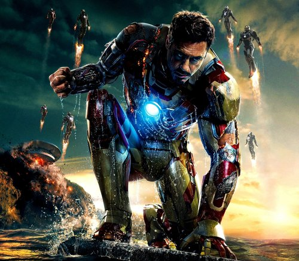

.jpg)
Iron Man

- True name:Anthony Edward Stark
- Height:185cm(without armor) & 198cm(with armor)
- Weight:90kg(without armor) & 193kg(with armor)
CAPABILITIES
- Ingenious intelligence
- Outstanding Inventor and Engineer
- Master of hand-to-hand combat
- Extensive knowledge in many fields of science
- Cyber Link with Armor Suit
- Great financial opportunities
Iron Man and movies where he did participate
| Name | Year | Score |
|---|---|---|
| Iron Man | 2008 | 8,8/10 |
| Iron Man 2 | 2010 | 8,8/10 |
| The Avengers | 2012 | 8,7/10 |
| Iron Man 3 | 2013 | 8,9/10 |
| Avengers:Age of Ultron | 2015 | 8,7/10 |
| Captain America: Civil War | 2016 | 8,6/10 |
| Spider-Man: Homecoming | 2017 | 7,9/10 | Avengers: Infinity War | 2018 | 9,2/10 |
| Avengers: Endgame | 2019 | 9,4/10 |
BIOGRAPHY
The eccentric genius, millionaire, ladies' man and philanthropist Tony Stark is also an armored superhero known as Iron Man.
Tony Stark is the son of a wealthy industrialist and inventor Howard Stark. His parents were killed in a car accident when Tony was 21. Having acquired his father's company, Stark Industries, he made it a leader in the production of weapons. When Tony Stark came to Afghanistan to personally attend the test trials, his squad was attacked
by terrorists, and the shrapnel-wounded billionaire was captured by the arms baron Wong-Chu.
The head of the terrorists promised to keep Stark alive if he made weapons of mass destruction for him. Tony agreed to the deal in hopes of buying time and getting access to the materials he needed. He was assisted in the work
by another captive scientist, the famous Asian physicist and Nobel laureate Professor Ho Insen, whose work inspired Stark in college.
Together, they created a battle suit with a magnetic field generator that protected the wounded Stark's heart. With the help of the suit, Tony managed to escape from captivity, while Ho Insen sacrificed himself, buying him time. Returning home, Tony Stark began to improve the suit and the magnetic generator, on which his life completely depended.
For ethical reasons, Tony stopped making weapons and focused on Stark Industries on the creation of new technologies that serve the benefit of humanity. He created many charitable foundations, and, feeling an increasing responsibility to the world, he decided to reveal the secret of his personality and confess that he is Iron Man.
Tony Stark knows his own worth very well: he is both a sponsor of the Avengers and one of the most important members of the team. He seems narcissistic and constantly breaks the rules, but he does it in order to achieve his main goal - to save lives.
The high-tech Iron Man suit created by Tony Stark multiplies human characteristics. In the Iron Man suit, Tony Stark is capable of lifting up to 90 tons, armor protects him from knife and bullet wounds. The suit's built-in armament consists of numerous cannons, lasers and missiles, while repulsorlators in boots and gloves allow Iron Man to fly. The suit also has a built-in operating system that resembles an artificial intelligence, with which Tony can communicate with satellites or the headquarters of the Avengers.
Tony Stark has designed many designs of his costume for different purposes. So, for example, one of them is completely intended for stealth operations, and the other allows you to move in open space.